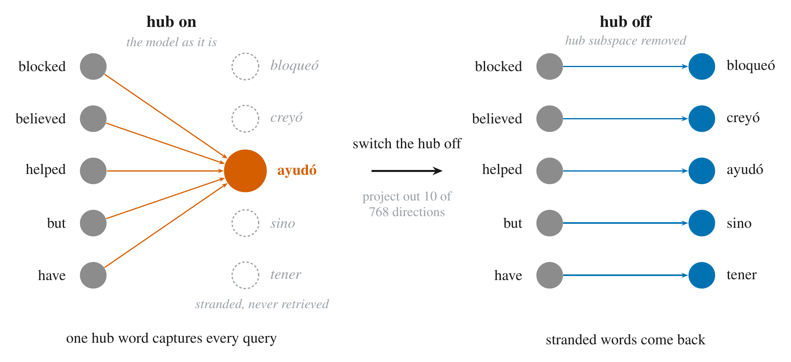
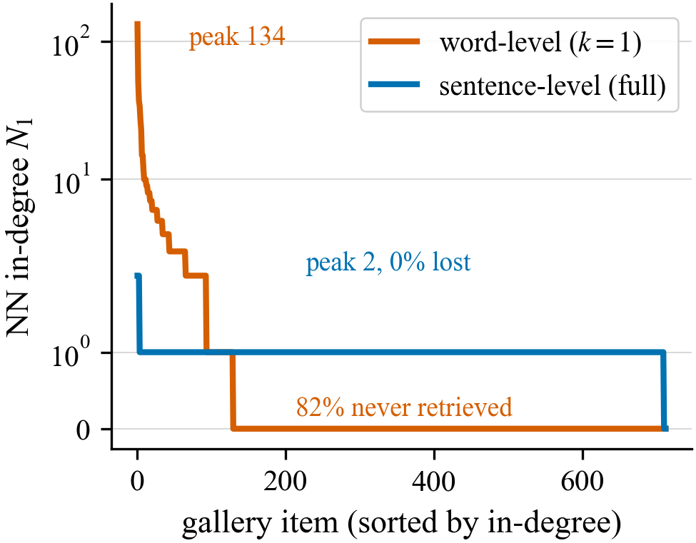
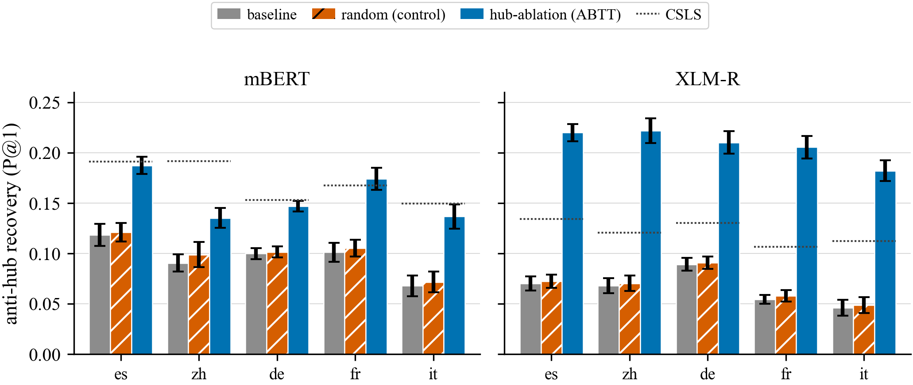
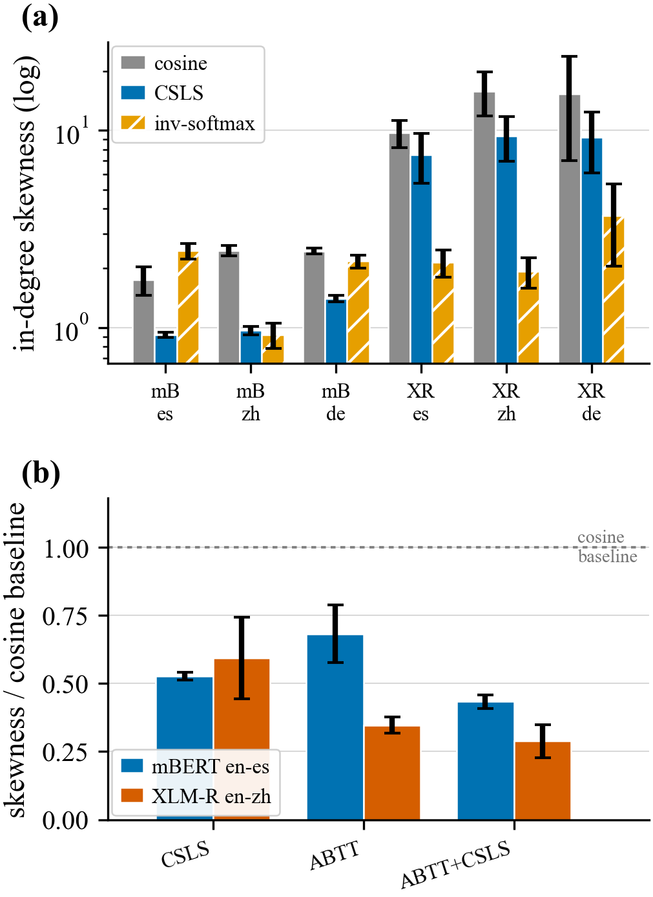

Multilingual models translate words far less reliably than sentences. The gap is not missing alignment. Ten high-variance directions of the activation space work as a causal dial: project them out and stranded words come back, amplify them and retrieval collapses, and matched random directions do neither.
Multilingual language models reliably translate full sentences across languages; the same cannot be said for single words. This gap is often attributed to word representations being only partially aligned. We show that this failure stems largely from hubness, wherein a handful of words (hubs) become the nearest neighbor for far too many translation queries, stranding the rest of the vocabulary (anti-hubs). Truncating sentence retrieval down to single words across eleven diverse languages, we find a few words to be the nearest neighbors of up to 134 queries each (English–Spanish), while 82% of the target words are never retrieved; this imbalance and the large hub mass gradually dissolve as the amount of context grows and lexical ambiguity disappears. We find this hubness to be carried by ten high-variance directions of the single-token activation space, emerging as a bidirectional causal dial. Projecting out these directions recovers otherwise stranded words and amplifying them worsens retrieval, while a random placebo does neither. Additionally, on downstream sentence-level tasks we discover that “de-hubbing” has a greater effect on the hub-dominated XLM-R than on sparsely-hubbed mBERT, and that the hub subspace is present beyond encoder models (a frozen Llama-3-8B). We further reveal that common retrieval-time fixes like CSLS indirectly flatten the same in-degree distribution targeted by our ablation: what looks like misaligned representation can instead be a dial we turn directly within the model geometry.
Take a multilingual encoder, embed a sentence in English and its translation in Spanish, and the two land almost on top of each other. Do the same with a single word and retrieval falls apart.
The same hidden states that match sentences across languages near-perfectly, with no training, match isolated words much worse. The usual explanation is that the word-level space is only partly aligned, so people reach for a better mapping. We take the asymmetry itself as the clue and ask what changes as a word grows into a sentence.

Accuracy climbs smoothly as a word gains context, in every language and both encoders. Word-level retrieval is the worst-case endpoint of one curve, not a separate phenomenon. Drag the slider from a single token to a full sentence and watch the floor lift.
In single-token space the nearest-neighbor graph collapses onto a few hub words that are the top match for hundreds of queries, while most words are no one's match.
One hub word can be the nearest neighbor of up to 134 queries; 82% of the gallery is never retrieved by anyone. As context grows, the hub mass melts away. Hubs track lexical ambiguity, not frequency: monosemous words retrieve at 0.52 against 0.26 for polysemous ones, and a multivariate regression keeps polysemy as the strongest per-word predictor once word length, frequency, and subword count are held fixed. The words the hubs crowd out are essentially unretrievable, at 0.02 against 0.65 for hub targets.

The hub structure is not spread across the representation. It sits in a small set of top-variance directions, about 14% of the variance on mBERT and 23% on XLM-R in ten directions, 11 to 18 times their isotropic share. The space as a whole stays high-dimensional, with an effective rank of roughly 405 of 768 on mBERT and 300 on XLM-R: a concentration, not a low-dimensional space.
We project out the top directions (all-but-the-top) and previously unretrievable words recover, on all five language pairs and both encoders: on mBERT recovery rises from 0.07–0.12 to 0.14–0.19, matching CSLS on every pair but en–zh, and on the more hub-prone XLM-R from 0.05–0.09 to 0.18–0.22, above CSLS. Projecting out the same number of random directions does nothing; that control is what pins the effect on the high-variance directions rather than on generic rank reduction. The subspace also travels: estimated on en–es alone and applied unchanged, it recovers anti-hub words on the other four pairs at 113% of the pair-native gain on mBERT and 93% on XLM-R, holds on queries whose English word never entered the estimation, and a subspace fit on a disjoint half of the words de-hubs the held-out half as well as the in-sample fit. A frozen Llama-3-8B carries the same structure, though the downstream effect is narrower than the encoder one: removing the subspace raises the log-probability of the gold word's first token (+0.09 nats, positive in 8/8 seeds) without changing the top-1 output, but scored over the whole word the sign reverses (−0.06 nats per token, negative in 7/8 seeds) and full-word exact match is flat (0.301 to 0.298). We report the decoder as a scoped check that the subspace is a property of the representation, not of encoder retrieval, not as a downstream win.

A skeptic could say removing the biggest directions always helps, so this is just generic anisotropy, not a real subspace. We test that head-on.
ZCA whitening rescales every direction to equal variance, full isotropy, instead of removing the top ten. If the recovery needed one narrow set of special coordinates, whitening should fall short. It does not. Whitening matches the directed ablation on the mild-hub mBERT, where recovery differs by at most 0.009 on any pair, and beats it on the heavy-hub XLM-R, where it is higher on both accuracy and recovery on all five pairs and flattens the in-degree distribution more on four of them (en–zh is the exception). It does all this while discarding no directions. Pick a metric and watch the three bars.
This is evidence for the localized account, not against it. Whitening and ablation act on the same high-variance directions, one rescaling them, the other removing them, so the fact that both work pins the effect on that subspace. The random-direction control rules out generic rank reduction; whitening hitting exactly the top-variance directions rules out the effect being a narrow set of special coordinates. ABTT keeps one practical edge: it is a fixed rank-10 projection you can drop into a frozen decoder mid-forward, where you cannot estimate and apply a full whitening transform to the running activations and only need the hub directions gone.
If that subspace really carries the failure, it should work in reverse. Projecting it out (dialing down) restores retrieval. Scaling it up (dialing up) should manufacture hubness on demand. It does, on every pair and both encoders, while amplifying random directions does almost nothing. Drag the dial from ablate through baseline to 8× and watch retrieval collapse.
The control is the point: random-amplify (the open marker) barely moves, so the collapse is specific to the hub subspace, not to perturbing the vectors. One honest wrinkle the dial shows: on the milder-hub mBERT, amplification concentrates in-degree into bigger hubs, but on the already hub-saturated XLM-R it disperses in-degree on four of five pairs (en–zh is flat) even as retrieval still collapses. The behavioral failure is what is common to both; the in-degree shape is regime-dependent.
Bilingual lexicon induction already has hubness corrections that act at retrieval time, like CSLS and inverted softmax. They flatten the same in-degree distribution our ablation targets: on mBERT, cosine in-degree skew of 1.7–2.5 drops under CSLS to 0.9–1.4; on XLM-R, where cosine skew runs 9.7–15.8, the inverted softmax flattens it to 1.9–3.7. Much of the hub mass they correct lives in the localized subspace, and projecting that subspace out reproduces much of CSLS's flattening on its own. The overlap is real but not total: ABTT plus CSLS still beats either alone, so the two interventions share a large common factor and each also touches structure the other misses. The field's standard fixes have a representational target, and naming it lets one choose where to intervene.

A few hub words catch up to 134 queries while 82% of the gallery is never retrieved. Lexical ambiguity, not frequency, predicts who fails, and context dissolves the hubs.
Project it out and stranded words return (0.12 to 0.19 on en–es, matching CSLS); amplify it and retrieval collapses (P@1 0.61 to 0.21). Matched random directions do neither.
Ten directions hold 14–23% of the variance while effective rank stays in the hundreds. Fit on en–es, the subspace transfers to the other pairs and to held-out words.
CSLS and inverted softmax flatten the same in-degree distribution at read-out. A frozen decoder carries the subspace too: +0.09 nats on the gold word's first token, top-1 unchanged. Scored over the whole word the sign reverses (−0.06 nats), so the decoder is a scoped check on the representation, not a downstream win.
@inproceedings{anon2026hubnessdial,
title = {Hubness, Not Misalignment: A Causal Dial for Cross-Lingual Word Retrieval in Multilingual Models},
author = {Anonymous},
booktitle = {Under review},
year = {2026}
}
Numbers in the interactives are read directly from the paper's experiment outputs (layer 1; ablation, whitening, and dial over 5–20 seeds). Figures are the paper's own figures.